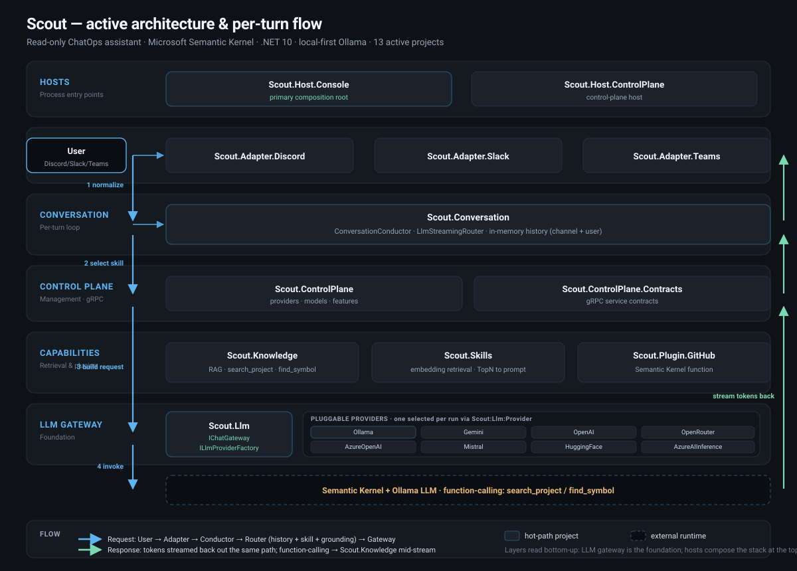

High-Level Architecture & Per-Turn Flow
Scout is organised in layers around a per-turn conversation model. Every inbound chat message follows one streaming pipeline: a platform adapter normalises the event, the conductor wraps the turn in telemetry, the router selects skills and calls the gateway, and the gateway streams tokens — optionally invoking read-only feature plugins — back to the originating channel only.

Layered architecture
The active source tree is grouped into roles, from the shared contracts at the bottom up to the
process entry points at the top. The architecture centres on the per-turn conversation model in
Scout.Conversation plus a distributed control plane, with pluggable chat adapters, LLM
providers, and read-only feature plugins. The layers below match the thirteen projects that ship in
the restructured tree.
Two host processes anchor the system. Host.Console is the primary chatops host: a
config-gated, multi-adapter worker that emits a SCOUT_READY marker on stdout and shuts
down on stdin EOF via a parent-death watchdog. Host.ControlPlane is a gRPC server
over a Unix domain socket (Linux/macOS) or named pipe (Windows) — no TCP port — guarded by a
per-session token interceptor for managing providers, models, and features.
Streaming-first everywhere (IAsyncEnumerable<string>; blocking
calls drain the stream internally). Cycle-safe DI: the embedder is built outside
the kernel to break the Kernel → KernelPlugin → IEmbeddingGenerator → Kernel
loop. Self-gating: adapters and plugins register only when configured, so an
unconfigured host still starts. Distributed tracing via
ScoutActivitySource.
The layers in detail
- Hosts — process entry points. Host.Console bootstraps the whole stack and runs the per-turn loop; Host.ControlPlane exposes the management surface over secure local gRPC.
- Adapters — one config-gated connector per platform. Each implements the inverted
IChatAdapter, normalises platform events intoChatMessage, and renders responses through a channel-boundIResponseSink. Rollout order is Discord → Slack → Teams. - Conversation — the platform-agnostic per-turn core:
ConversationConductor,LlmStreamingRouter,StreamPump, the cumulative-textIResponseSink, and the message/response/citation contracts. - Control Plane — domain services for provider lifecycle, feature registry, and model operations, fronted by the gRPC contracts.
- Capabilities — retrieval and behaviour shaping:
Scout.Knowledge(vector-backed RAG) andScout.Skills(embedding-driven skills library) that ground and steer each turn. - Plugins — read-only feature modules contributed as Semantic Kernel function calls; today the GitHub plugin is the reference implementation.
- LLM Gateway —
Scout.Llmwraps Semantic Kernel behind the provider-agnosticIChatGateway; no SK or connector SDK type leaks to consumers. - Foundation —
Scout.ControlPlane.Contractsholds the.protocontracts and generated C# server stubs shared across the control plane.
The per-turn message flow
Every inbound chat message follows the same streaming pipeline. A platform adapter normalises the
event into a ChatMessage and a channel-bound IResponseSink, the conductor
wraps the turn in telemetry, the router selects skills and calls the gateway, and the gateway streams
tokens (optionally invoking read-only feature plugins as Semantic Kernel function calls) back through
the sink to the originating channel only.
Tokens stream back through StreamPump → IResponseSink, which accumulates cumulative text (never deltas) and emits a single terminal Complete or Fail. Feature plugins (GitHub, Knowledge, Skills) contribute Semantic Kernel functions that the model may call mid-stream; retrieval grounds the answer with citations. Memory is written back only on clean completion.
Step by step
- Inbound & normalise. A chat adapter receives the platform event (message, mention, slash command), translates it into a
ChatMessage, and creates anIResponseSinkbound to the originating channel/thread. - Conduct. The
ConversationConductoropens an OpenTelemetry activity for the turn and provides fail-safe handling so a thrown turn never crashes the host. - Route. The
LlmStreamingRouterselects relevant skills, replays bounded per-conversation memory, and assembles a provider-agnostic chat request. - Gateway.
ChatGatewaydrives the shared Semantic Kernel — through aChatCompletionAgentwhen one is registered, otherwise the direct chat path — with function-calling enabled. - LLM + tools. The model streams tokens from the configured provider (default Ollama over the OpenAI-compatible
/v1endpoint) and may call read-only plugin functions mid-stream; retrieval adds citations. - Stream back.
StreamPumpowns the single drive loop and pushes cumulative text into the sink, which renders platform-native streaming edits. - Terminate. The sink emits one terminal Complete or Fail; conversation memory is persisted only on clean completion.
The cumulative IResponseSink was designed against Teams as the least-capable target:
it carries cumulative text rather than deltas, the pump owns the drive loop exactly once, and
rate-limit handling lives in the sink. StreamAsync is the canonical gateway path;
CompleteAsync simply drains the same stream, so there is one code path end to end. See
Streaming-First and
ADR 0013.
Read-only by construction
Scout describes and answers work for humans in chat; it never executes mutating operations against
external systems. Plugins declare capabilities classified by WriteClass
(None / Descriptive / Executive); executive writes are forbidden and the registry enforces the
invariant at startup. PluginCapabilities.IsReadOnly has no setter, so a
write-capable state is unrepresentable in the type system, and replies are bound only to the
originating channel/thread.
See Descriptive vs Executive Writes and No Executive Writes for the full classification and the per-plugin allow-list.
LLM gateway & providers
All LLM communication — chat completions and embeddings — flows through Microsoft Semantic Kernel via
Scout.Llm. The gateway exposes a provider-agnostic IChatGateway and an
ILlmProviderFactory; exactly one provider is selected per run from a single configuration
source under Scout:Llm. The default is Ollama (local-first), keeping the contributor
experience free of paid credentials. This decision and its SKEXP0070 trade-off are
recorded in ADR 0012;
the full service surface lives on the Scout.Llm page.
Control plane & desktop
The desktop application (Electron main + Angular renderer) supervises the chatops host: it spawns
Host.Console with a stdin pipe, waits for the SCOUT_READY marker, and feeds credentials
from its vault as environment variables (for example
SCOUT__ADAPTERS__DISCORD__BOTTOKEN). The renderer talks to the control plane over gRPC on
a Unix domain socket or named pipe rather than a TCP port; the Node/Electron client side of that
transport is still on the backlog. The transport decision is captured in
ADR 0011.
Current state
The restructure on branch feat/scout-llm-gateway has the LLM gateway, conversation core,
all three adapters, the chatops host, and the .NET control-plane server implemented, with quality
gates (architecture, code review, security audit) run and findings fixed. Linux AppImage packaging
works and a Discord bot connects and replies end to end. Notable remaining work: feature plugins
beyond GitHub (Kubernetes, CloudStatus, CodeQA, Help) are not yet rebuilt, the Node/Electron gRPC
client and onboarding forms for Slack/Teams are pending, and bot identity needs a tightened system
prompt so a local model answers as Scout. The full list lives in
Status & Pending Work and
Current Focus & Backlog.